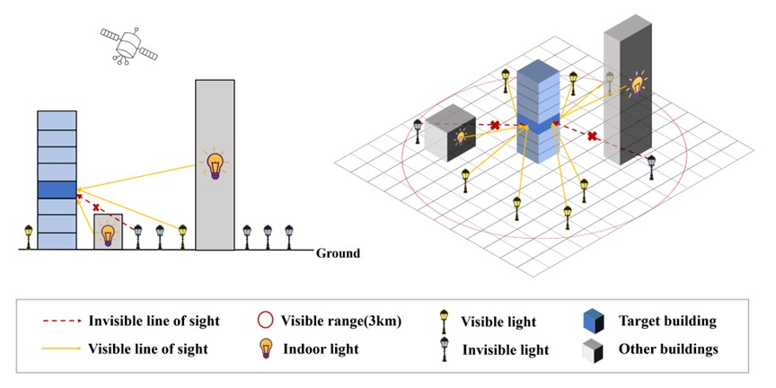
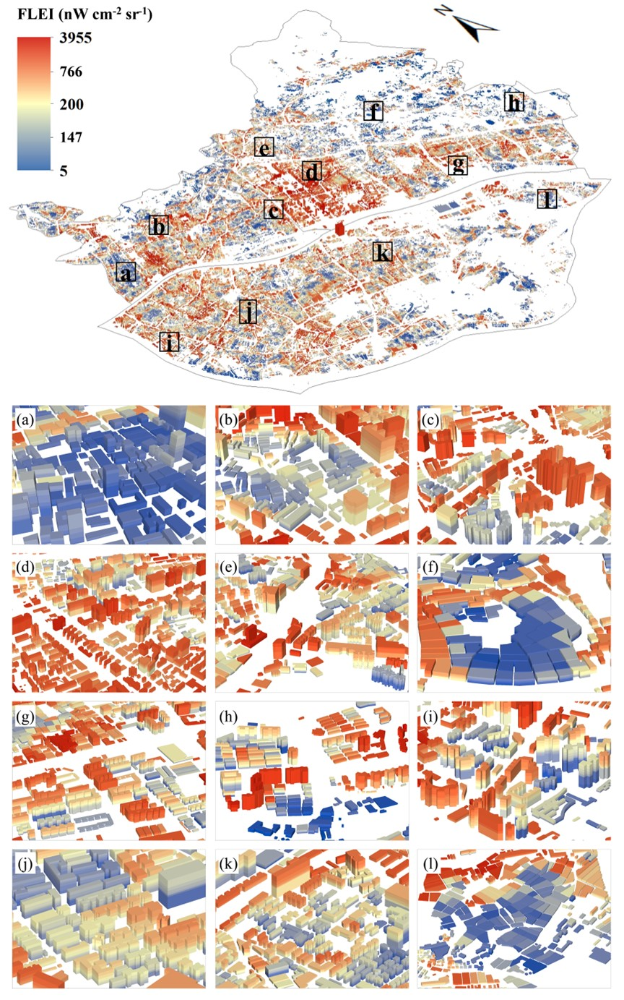
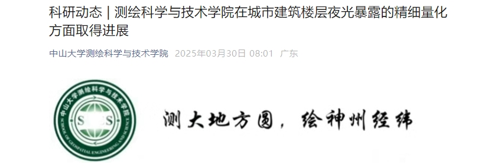

Building Floor-level Nighttime Light Exposure
光污染作为一种新型的环境污染物，被称为“21世纪直接影响人类身体健康的又一环境杀手”，会对自然生态系统和人类身心健康带来诸多危害。研究表明，过度的夜光暴露会扰乱生物钟、干扰大脑神经活动，从而引发头痛、心烦以及抑郁神经衰弱等一系列症状，增加城市居民癌症和糖尿病等疾病的发病率。城市建筑是人类生活工作的主要空间，也是城市光污染最为严重和集中的场所之一。因此，量化城市建筑的夜光暴露水平，对改善城市人群身心健康以及生活品质具有重要的实践和科学意义。然而，目前光污染的研究多集中于中粗分辨率的宏观尺度，尚无方法或实例能做到建筑及楼层尺度的夜光暴露量化与评估。
针对上述问题，本研究首次提出了一种量化建筑楼层尺度夜光暴露的新方法。该方法利用三维建筑数据和40米分辨率的SDGSAT-1 NTL数据，基于楼层三维通视情况和夜光衰减情况全面量化每个建筑楼层所累积的夜光辐射总量。以广州中心城区为研究区域，量化了57,221个建筑逐楼层的夜光暴露条件，并分析了不同空间尺度的夜光暴露水平。

灯光暴露计算示意图利用激光雷达（LiDAR）数据重建城市三维形态，将地表亮度重采样至建筑外立面。
基于 SDGSAT-1 的 10 米分辨率彩色灯光数据，区分不同光谱（钠灯、LED）的影响。

通过对比 Global North 与 Global South 的典型城市，我们发现城市建筑密度与垂直灯光暴露呈现显著的非线性相关关系。这一发现为未来的智慧照明与城市规划提供了重要科学支撑。
